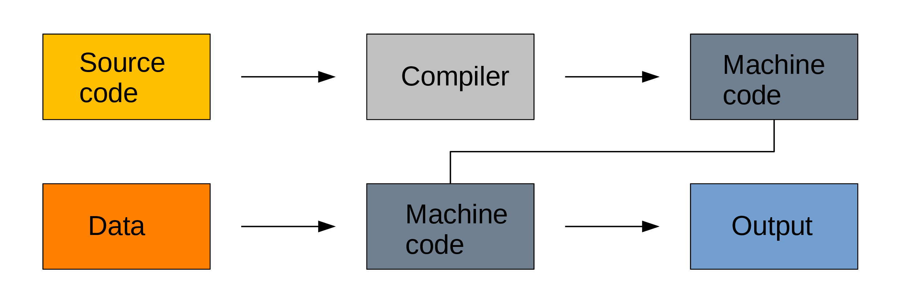
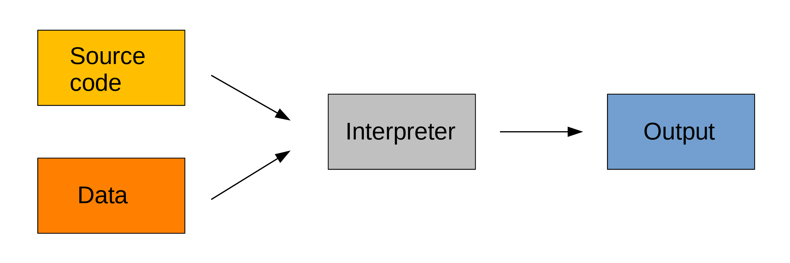

A few words about Python
Before we start our course, let’s talk briefly about Python, its history, its strengths, and its limitations.
A very popular language
From a slowish start …
Python was released in 1991 by Dutch programmer Guido van Rossum to the “alt.sources” Usenet group.
Its initial adoption was very gradual in niche communities.
In the 2000s, the release of Python 2.0, the birth of Python-based web frameworks, and the development of the first scientific libraries turned Python into a mainstream language.
The introduction of version 3.0 in 2008 fixed core design flaws in the language, but because many changes were backwards-incompatible, it also created rifts in the community and a slow and fragmented transition from the old mature version to the new one.
… to the most popular language
Since the mid-2010s, the language has seen an explosive growth thanks to the uptake by the data science community and the deep learning revolution (when Google released TensorFlow in 2015 and Facebook released PyTorch in 2016, they chose Python as their primary interface, making it, for better or for worse the lingua franca of AI and Machine Learning).
You can track its ever increasing advantage over other programming languages in indexes such as the PYPL PopularitY of Programming Language index (based on the number of tutorial searches in Google) or the TIOBE (calculated from the number of search engine results for queries containing the name of the language).
An interpreted language
Compiled languages
Compiled languages require two steps:
In a first step the code you write in a human-readable format (the source code, usually in plain text) gets compiled into machine code.
It is then this machine code that is used to process your data.
So you write a script, compile it, then use it.

Because machine code is a lot easier to process by computers, compiled languages are fast. The two step process however makes prototyping new code less practical, these languages are hard to learn, and debugging compilation errors can be challenging.
Examples of compiled languages include C, C++, Fortran, Go, and Haskell.
Interpreted languages
Interpreted languages on the other hand are executed directly. This has many advantages such as dynamic typing and direct feed-back. They are easy to learn and prototyping and debugging are a lot simpler. This however comes at the cost of efficiency.

The source code can facultatively be bytecompiled into non human-readable, more compact, lower level bytecode which is read by the interpreter a bit more efficiently.
Examples of interpreted languages include R, Perl, JavaScript, and for our purpose here, Python.
Python’s pros and cons
To sum up, here are the main strong points and drawbacks of Python:
| Strengths |
|---|
| Very popular |
| Large number of libraries |
| Friendly syntax |
| Interpreted (easy prototyping) |
| Dominant language in deep learning frameworks |
| Numerous resources |
| Weaknesses |
|---|
| Slow |
| Memory intensive |
| Threading limitations |
| OOP added after the fact and clunky |
| Runtime errors (dynamic typing) |